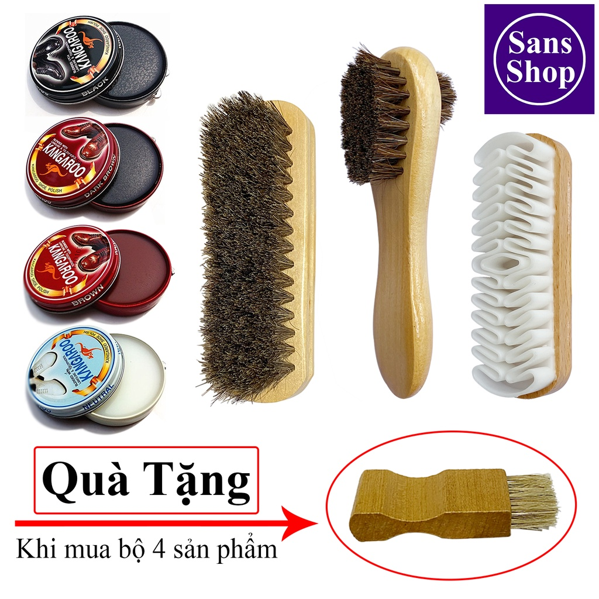

Hướng Dẫn Chi Tiết Cách Giặt Giày Adidas Tại Nhà
1.1. Chuẩn Bị Dụng Cụ Và Vật Liệu Cần Thiết
Trước khi bắt đầu giặt giày Adidas, bạn cần chuẩn bị đầy đủ các dụng cụ và vật liệu cần thiết để đảm bảo quá trình giặt giày diễn ra thuận lợi và hiệu quả.
- Nước sạch: Không quá nóng hoặc quá lạnh để tránh làm hư chất liệu giày.
- Xà phòng hoặc dung dịch giặt giày: Dạng nhẹ, chuyên dụng cho giày vải, da, da lộn.
- Bàn chải mềm: Làm sạch hiệu quả mà không trầy xước giày.
- Khăn sạch: Dùng để lau và làm khô giày nhanh chóng.
1.2. Các Bước Thực Hiện
1.2.1. Tháo Dây Giày Và Lót Giày
Tháo rời dây và lót giày để vệ sinh riêng biệt. Giặt dây bằng tay hoặc trong túi giặt.
1.2.2. Làm Sạch Bụi Bẩn Khô Trên Giày
Dùng bàn chải mềm hoặc khăn khô để loại bỏ lớp bụi bẩn bên ngoài trước khi giặt.
1.2.3. Pha Dung Dịch Giặt Giày
Pha loãng xà phòng nhẹ với nước sạch, tạo bọt nhẹ vừa đủ để làm sạch.
1.2.4. Giặt Giày Bằng Bàn Chải Mềm
Dùng bàn chải thấm dung dịch và chà nhẹ nhàng theo chiều vải hoặc xoay tròn.
1.2.5. Xả Sạch Xà Phòng Bằng Nước
Dùng nước sạch để rửa lại giày, đảm bảo không còn dư xà phòng.
1.2.6. Làm Khô Giày Đúng Cách
Lau khô bằng khăn, để giày nơi thoáng mát, tránh nắng gắt. Có thể nhét giấy báo để giữ form và hút ẩm.
Phương Pháp Làm Sạch Giày Adidas Trắng Không Bị Ố Vàng
Giày Adidas trắng dễ bị ố vàng nếu không giặt đúng cách. Dưới đây là cách giúp giữ giày trắng sáng như mới:
- Sử dụng bàn chải mềm và nước ấm pha baking soda hoặc giấm trắng.
- Chà nhẹ nhàng lên vết bẩn và để yên vài phút trước khi xả sạch.
- Tránh phơi giày dưới ánh nắng gắt để không gây ố màu.